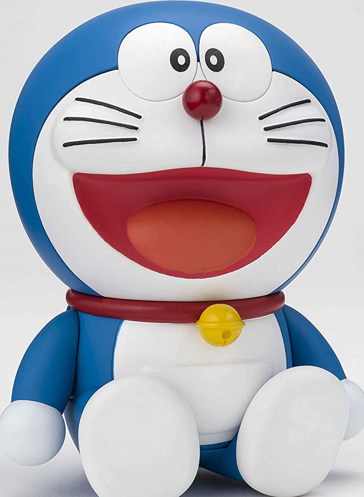

Doraemon is written and illustrated by Fujiko F. Fujio, the pen name of Japanese manga artist Hiroshi Fujimoto
According to Fujio, it was originally conceived following a series of three events: when searching for ideas for a new manga, he wished a machine existed that would come up with ideas for him, he tripped over his daughter's toy, and heard cats fighting in his neighborhood.
